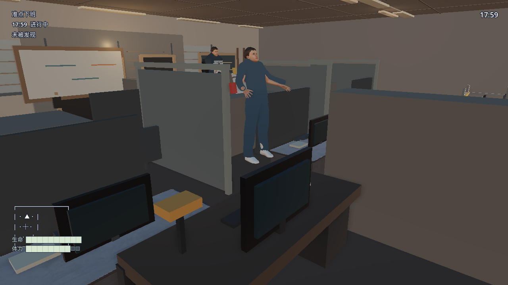

《新时代觉醒者》当前候选视觉审阅
本页面展示候选图形取证帧。由于截图采集身份可能早于当前构建，必须先核对两组身份；它用于人工比较，不代表视觉已通过。
机器哈希、运行时验证和候选包验证不能代替产品负责人逐帧签收；任何“通过”都必须有明确差异记录为空的人工结论。
本批截图源已过期：截图采集后候选运行包和正式源均已更新；本批 PNG 未重新采集，不能代表当前办公室主角材质或城市人群姿态修正。
当前活动候选包：player-character-makehuman-elegant-suit-atlas-candidate、office-npc-makehuman-elegant-suit-skinned-512-atlas-candidate、city-crowd-makehuman-elegant-suit-atlas-candidate、city-vehicle-three-wheel-delivery-final-procedural-candidate、city-environment-original-procedural-v3-candidate、office-desk-polyhaven-metal-cc0-candidate、interaction-props-original-kit-candidate。注意：本面板中的帧仍需逐项确认是否来自这一活动候选包。
原创角色与原创办公桌比较包：player-character-p0-procedural-candidate、office-npc-p0-procedural-candidate、city-crowd-makehuman-elegant-suit-atlas-candidate、city-vehicle-three-wheel-delivery-final-procedural-candidate、city-environment-original-procedural-v3-candidate、office-environment-original-procedural-v1-candidate、interaction-props-original-kit-candidate。该方案有独立行为证据，但本面板没有把旧帧自动归属于原创方案。
截图采集身份：候选包 256b94494f4f47b09a2614196873c6eb6607416db7828308c371f401079b76c7 / 263 文件；源 82b375799c7f032f4141b46d011cbdfdc4073f19ae88b53feb85dd2e985575d6 / 180 文件；状态：unverified
当前构建身份：候选包 6d8e0dc1166567753d8b6dfd8b9a199e7a608464f541f06fa2ea2b41749c4288 / 445 文件；源 f45b0ef2b12e5233c2772766bb011d31700e32de5ce4748fc1dd109e56cb1f35 / 321 文件。两者不一致时，当前帧只能作为历史候选参考，必须重新采集。
p0-candidate-office-movie-current · 办公室
未验收
参考帧 当前候选帧
当前候选帧
当前完整候选包办公室 Movie Maker 帧；可见角色、办公隔断、桌面和暖色灯光，尚未完成人工逐帧签收。
当前帧 SHA-256：444df1f117fd3965e09fe167aefd48e24a570178ed33c1288fcaccdb87ef0e86
p0-candidate-office-detail-movie-current-frame-63 · 办公室
未验收
参考帧
当前候选帧
当前完整候选包办公室近景 Movie Maker 第 63 帧；用于审阅肩后视角、角色、工位隔断、显示器和顶灯构图，尚未完成人工逐帧签收。
当前帧 SHA-256：db8a2124aa1559d8b3149761526395699c088a27bf8c4687b16fe3440709b758
p0-candidate-city-movie-current · 城市
未验收
参考帧 当前候选帧
当前候选帧
当前完整候选包城市 Movie Maker 帧；可见详细版蓝色开放货斗三轮车、货物、街道和 HUD，尚未完成人工逐帧签收。
当前帧 SHA-256：4f0e44479a0dabbee6c5f69ecb2d3c13611950179a3182404067e371d4aae075
p0-candidate-vehicle-detail-movie-current-frame-63 · 城市
未验收
参考帧
当前候选帧
当前完整候选包载具近景 Movie Maker 第 63 帧；用于审阅开放货斗、固定带、驾驶位、灯组和城市镜头构图，尚未完成人工逐帧签收。
当前帧 SHA-256：cc920060c724d4551782fd651534957f4c3a8fc9180a7ceb3e8062dcfd3d027a
p0-candidate-office-npc-idle-movie-current · 办公室
未验收
参考帧
当前候选帧
当前完整候选包办公室 NPC 待机近景 Movie Maker 第 63 帧；用于审阅无背包主管轮廓、浅色衬衣、工牌和办公区身份差异，尚未完成人工逐帧签收。
当前帧 SHA-256：efcee54f951821a5b4d2f0f41b14bbb0fabad0e141799a4085b38fe4ef584627
p0-candidate-office-npc-search-movie-current · 办公室
未验收
参考帧
当前候选帧
当前完整候选包办公室 NPC 搜索状态近景 Movie Maker 第 63 帧；用于审阅头部搜索姿态和对讲机搜索灯色，尚未完成人工逐帧签收。
当前帧 SHA-256：2031b6d5a914ad13cf6849fbe9587f7cef6f5b1fedc1ac993f503d2cf7c13976
p0-candidate-office-npc-alert-movie-current · 办公室
未验收
参考帧
当前候选帧
当前完整候选包办公室 NPC 警觉状态近景 Movie Maker 第 63 帧；用于审阅警觉姿态、对讲机红色告警灯和管理身份层，尚未完成人工逐帧签收。
当前帧 SHA-256：54320c76dcdd7b393eb00a83139c14e7757feb323748ba237418d9009db395a2